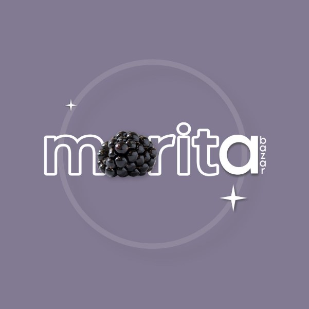

Morita Bazar SLP |
 |
"El nombre del bazar proviene de mi nombre que es Alondra Mora, y muchos suelen llamarme como “morita”, por eso fue que me decidí a llamar a este bello proyecto así. Iniciamos el día 09 de enero del 2023, y el crecimiento a sido muy rápido gracias a todxs ustedes, por sus recomendaciones, interacciones, sus buenos comentarios y sus buenas vibras. Uno de los propósitos principales es ofrecerles un buen servicio con las 3B, prendas bonitas, a buen precio, y de calidad. (ya que me tocaba ver bazares a precios muy altos). Quiero demostrarles que pueden encontrar ropa súper bonita y barata!"
-Alondra Mora